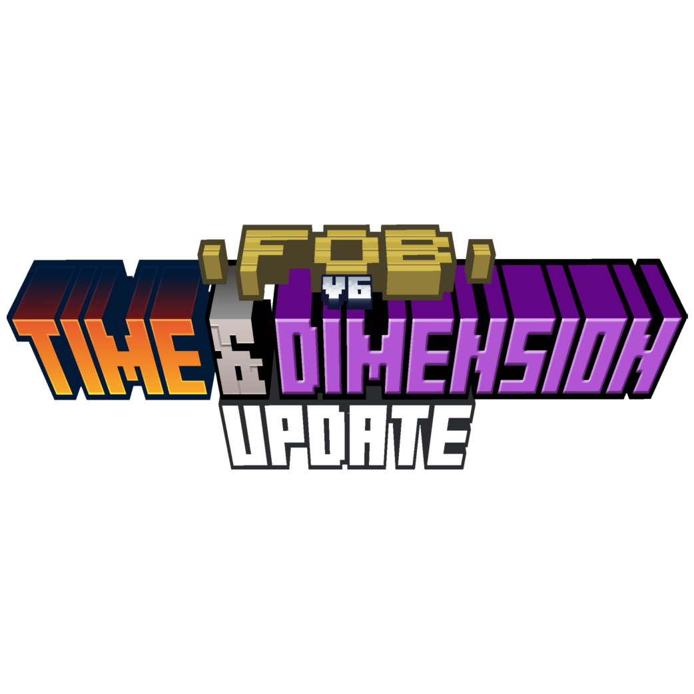
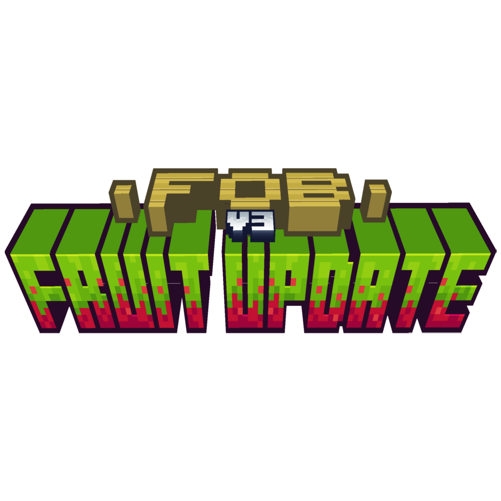
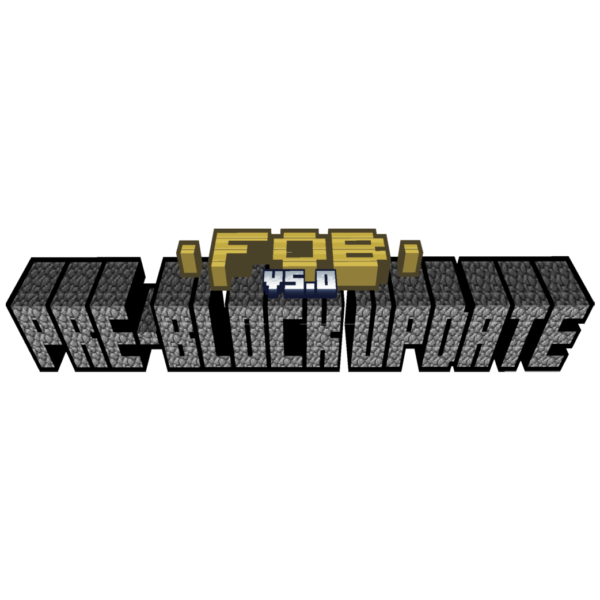
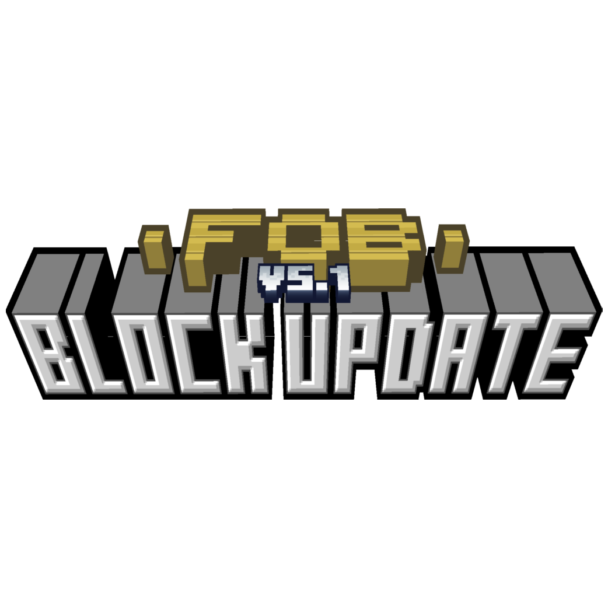

Toutes les infos sur FOB V6 | Time & Dimension Update sont situés juste en dessous
  
A propos de FOB V6 - Time & Dimension Update
FOB V6, en plus d'être la dernière version de FOB (sans compter les alphas de FOB Reborn) est aussi la version qui a demander le plus de temps de développement, car on est passé de 2 à 3 semaines de développement à 3 mois! Ajoutant des outils qui ont des effets sur le temps, elle ajoute aussi de nouvelles dimensions, qui sont principalement des dimensions de minerais (Charbon, Fer, Redstone, Diamant...) Elle devait avoir une version "patch" pour ajouter des dimensions en plus, mais au final, cette version a été annulée, laissant FOB sur cette Time & Dimension Update...